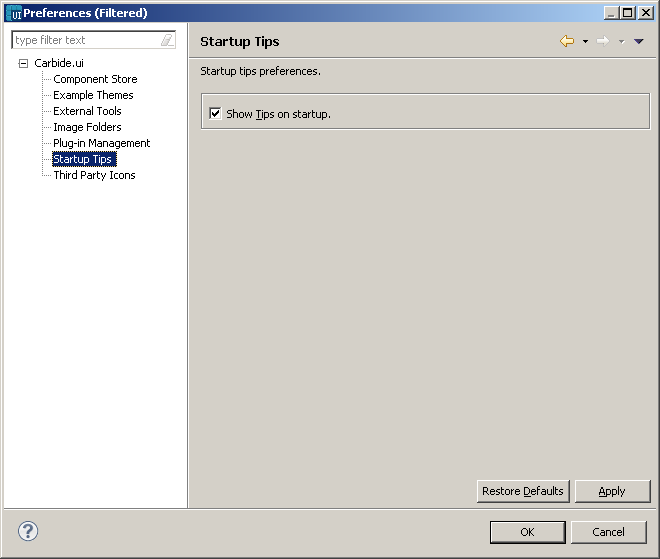

Startup Tips
By default, every time the tool is started, Startup Tips
are displayed to the user.
If you wish to turn off this feature to show tips at startup,
you can un-check the option from the preferences window.

Figure:
Preferences : Startup Tips